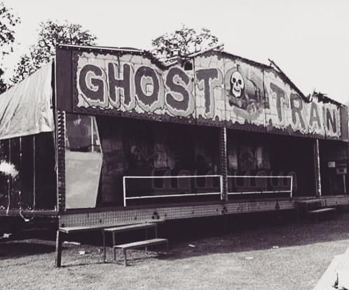
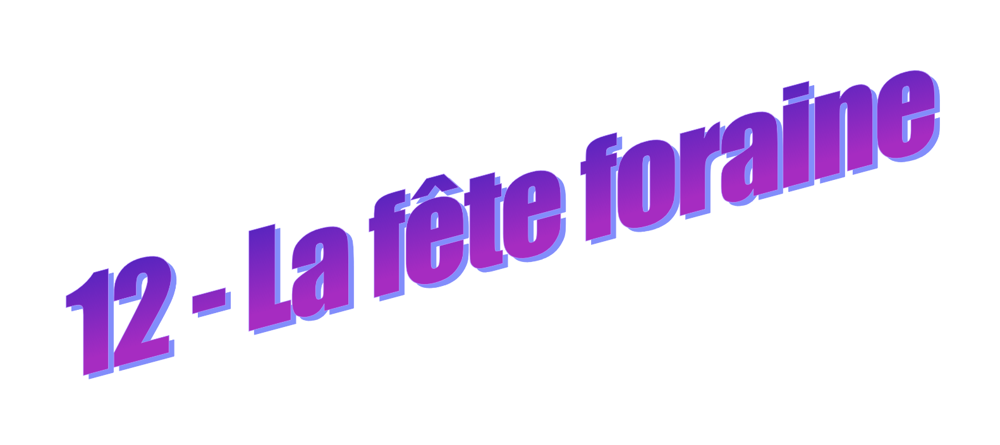
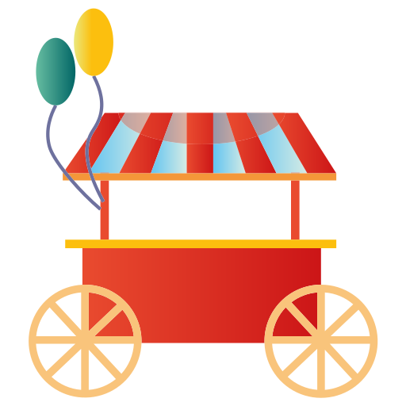
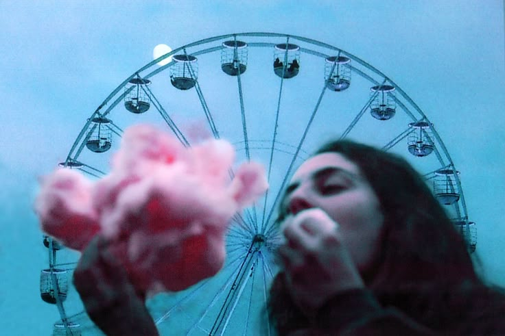
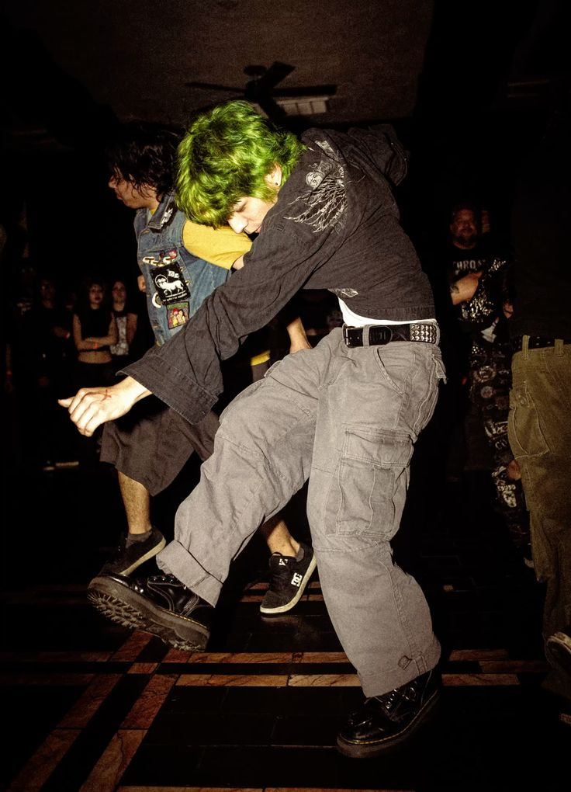
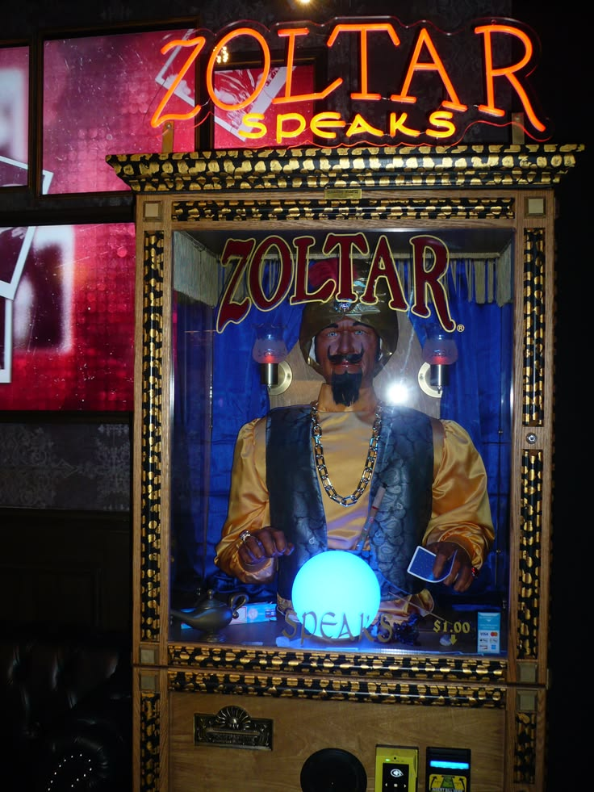
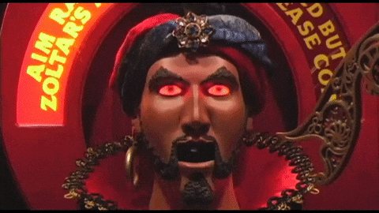

La fête foraine clignote déjà alors que le ciel arbore encore ses teintes zinzolines rougeoyant dans la fin d'après-midi. Tu n'arrives pas à croire que Vincent, le beau guitariste du lycée, ait accepté ton invitation ce soir. C'est improbable, c'est merveilleux, c'est improbable.Tu n'oses le regarder dans les yeux, mais tu sens son parfum envoûtant, un mélange de santal et de tabac. Celui qu'il roule à toutes les récrés.
Vous marchez dans l'allée principale de la fête, et c'est comme s'il n'y avait que vous deux parmi cette foule abrutie de sucre et de sensations fortes. Les effluves de pommes d'amour et de barbes à papa réveillent vos sens.

- Tu veux un truc ? demande Vincent sans vraiment te regarder.
- Je te laisse choisir ! réponds-tu avec candeur.
Il attrape un cornet de churros, sans enthousiasme. Tu marches à côté de lui, en regardant les manèges tourner au ralenti, comme si tout était un peu en décalage. Les cris des montagnes russes montent puis redescendent dans l’air froid.
- C’est sympa ici, non ? lances-tu comme une bouteille à la mer...
- Ouais… ouais.
Silence. Vincent s’arrête d’un coup. Son visage vient soudain de s'illuminer. Il vient d'être traversé d'une idée de génie ? Il veut enfin t'inviter dans le train fantôme... lieu parfait pour les rapprochements physiques ?
- Oh attends, y a les gars là-bas. Deux minutes.
Avant que tu ne puisses répondre, il a déjà levé la main.
- Vite fait hein ! s'exclame-t-il à déjà 10 mètres devant toi.
Il traverse la foule comme un marin aguerri traverse l'océan déchaîné. Tu restes plantée là.
Les lumières d’un stand de tir balaient ton visage.
Quelqu’un
explose ton tympan de son rire caverneux derrière toi.
Le vent
expire ses remugles de sucre chaud et de plastique mêlés.
Deux minutes passent.
Puis cinq.
Puis dix.
Tu ne bouges pas, tu prends racine sur l'asphalte couverte de glucose gluant. Tu regardes les gens comme s’ils faisaient partie d’un film auquel tu n’as pas été invitée. Le rire de Vincent résonne au loin : il a trouvé ses potes.
Ils parlent vite, ils s’interrompent, gesticulent, se tapent sur l'épaule... et repartent dans un autre sens.

Encore dix minutes.
Peut-être vingt.
Tu regardes tes chaussures. Ces deux bonnes vieilles converses usées jusqu'à la moelle et salies par les années de piétinement à travers champs et villes. Puis tu regardes autour de toi, le cœur serré, l’œil embué. Et tu le vois.
Zoltar.
La borne est là, coincée entre deux néons fatigués, comme oubliée par le reste du monde.

Elle clignote doucement. Zoltar, c'est pas une espèce
d'animatronic médium ? C'est bizarre comme concept, mais
pourquoi pas... C'est toujours mieux que t'attendre un mec qui n'en a
obviously rien à faire de toi...
Tu t’approches. La
vitre reflète ton visage, et Zoltar commence à s'animer... Tu es
saisie d'un frisson qui électrise ta colonne vertébrale.
Clique sur la tête de Zoltar pour obtenir ton message prophétique :
